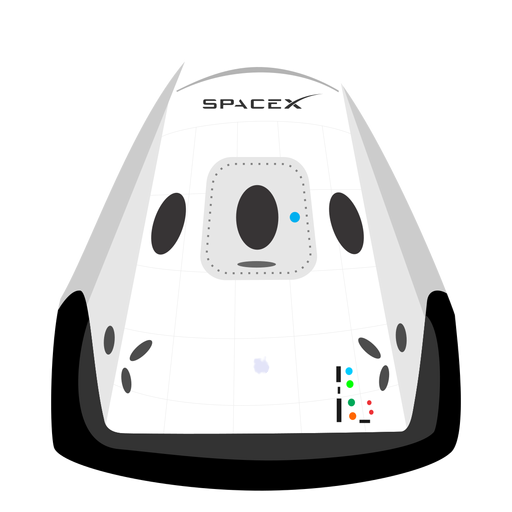

Hyperblog
Tu blog de cabecera
Aquí inicia la historia de un gran proyecto
Y este es el párrafo de inicio donde vamos a explicar las cosas increíbles que se puede hacer con ramas

Los blogs son la mejor forma de compartir información y tus ideas. Mucho más que ir a conferencias o salir en Youube. Excetpo si eres un rockstar. Pero estadísticamente no lo eres... por ahora
Suscríbete y dale link
Párrafo de prueba